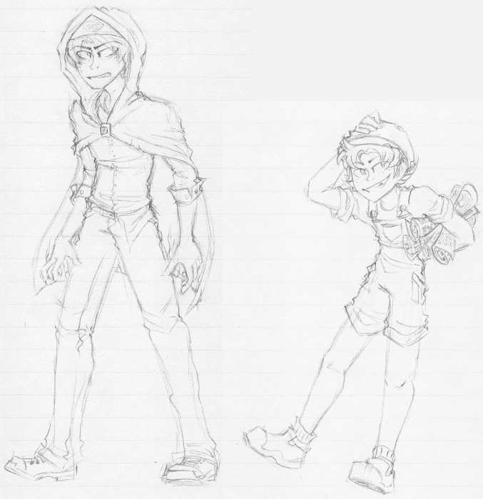
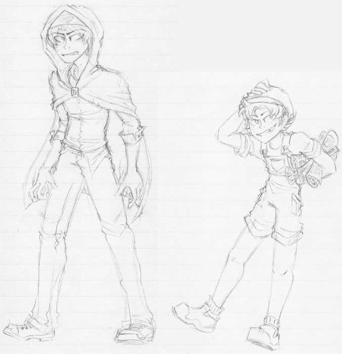
 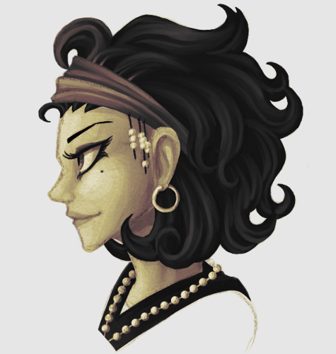
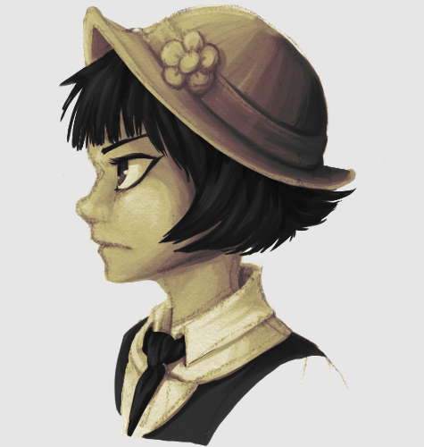
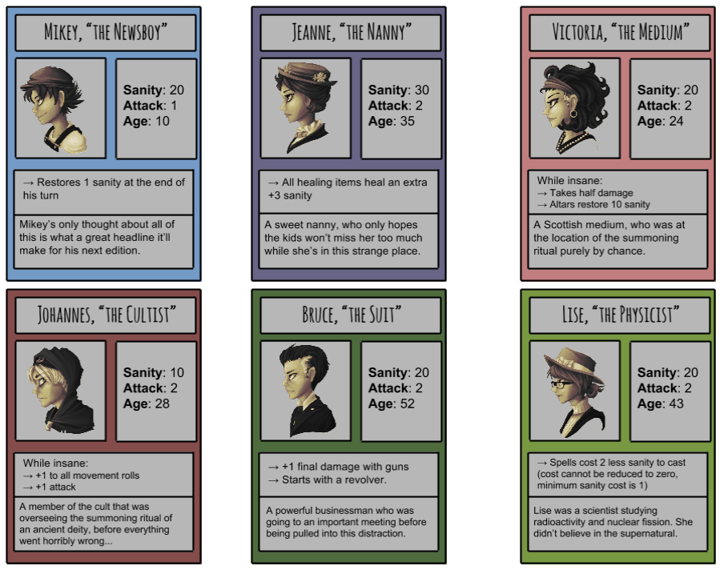
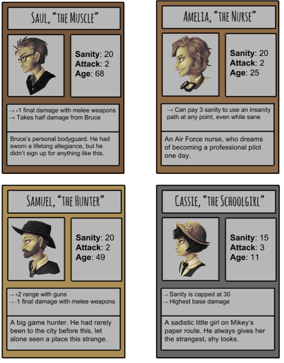
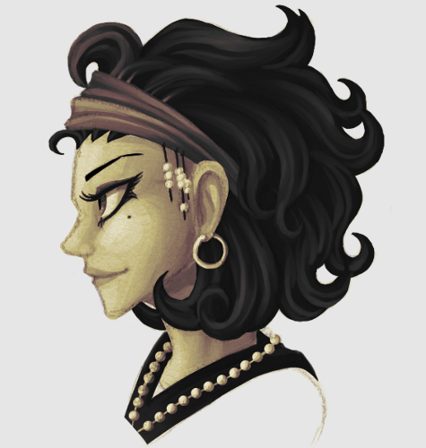
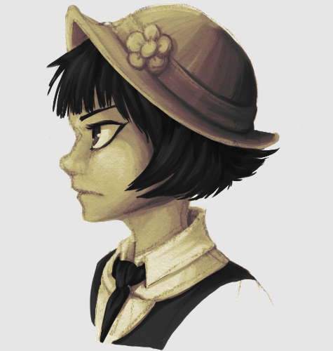
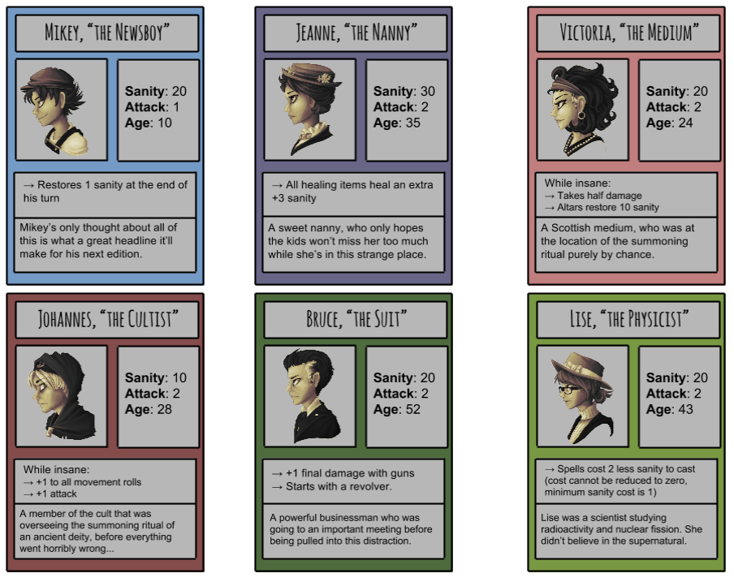
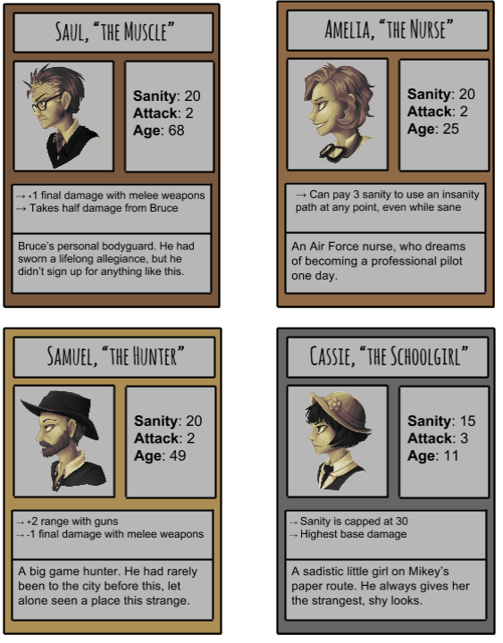
 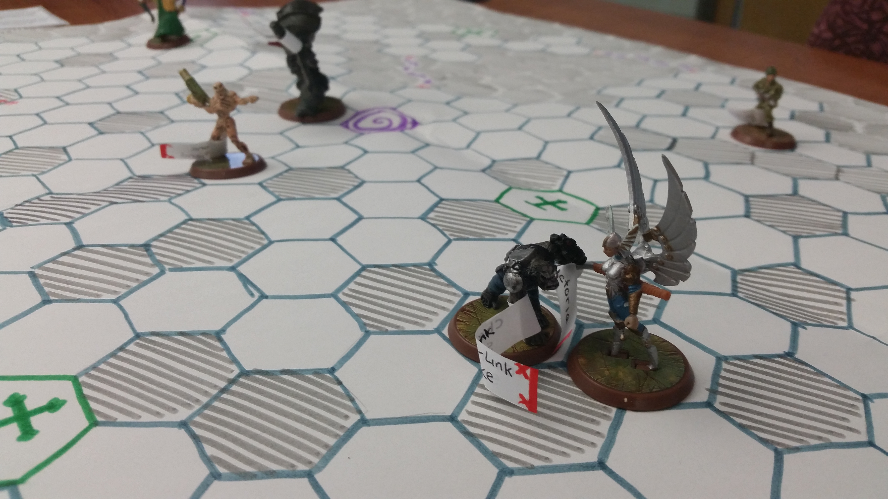
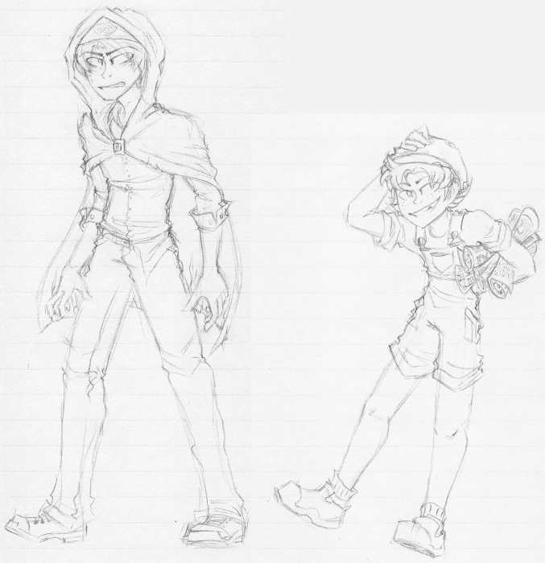
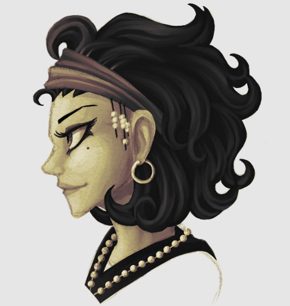
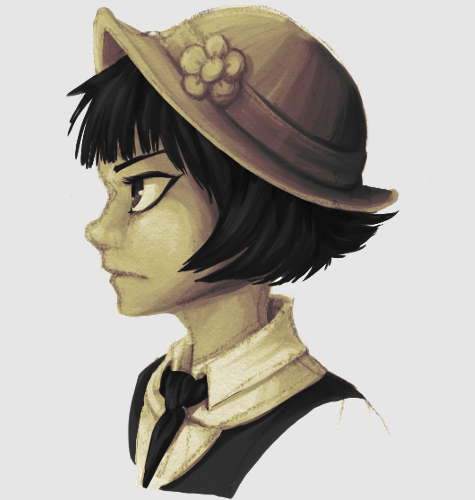
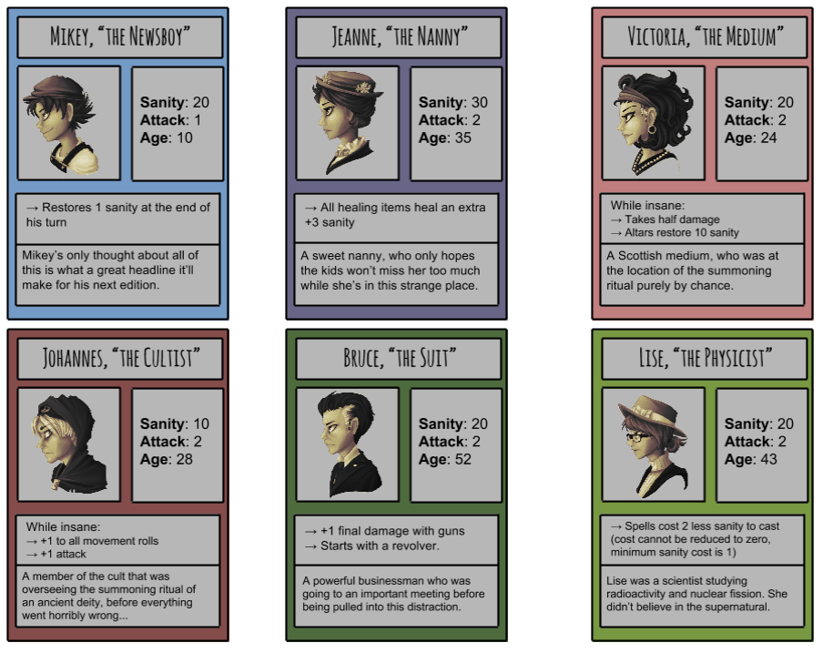
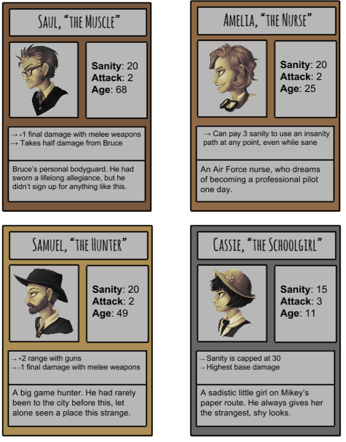
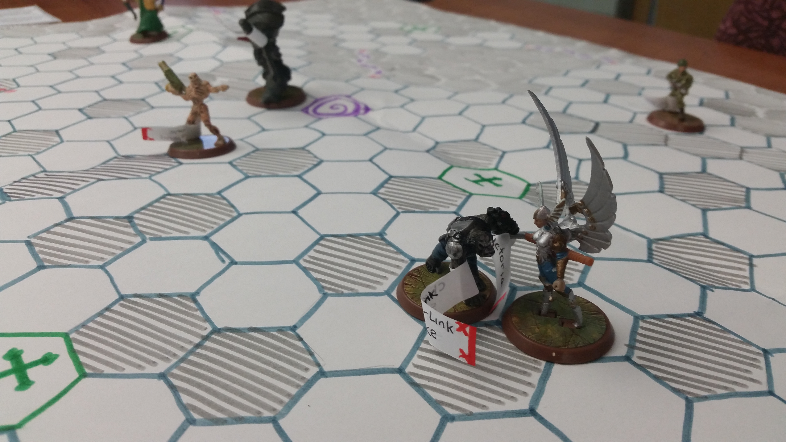
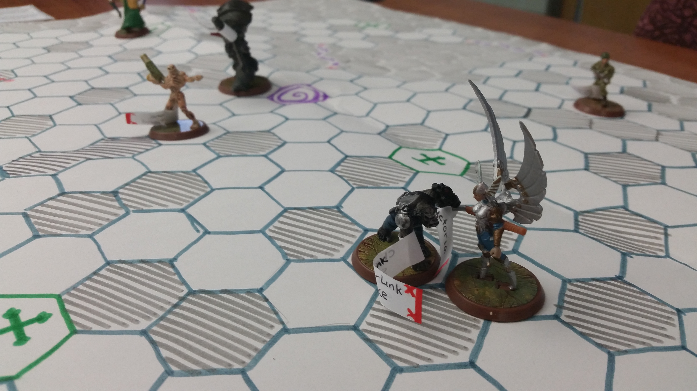
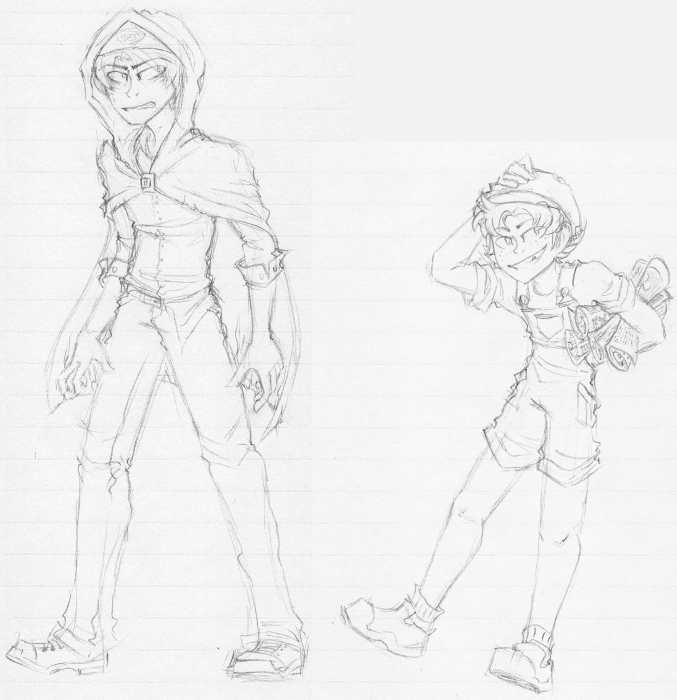
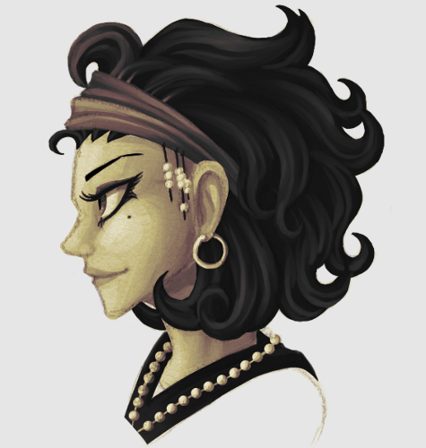
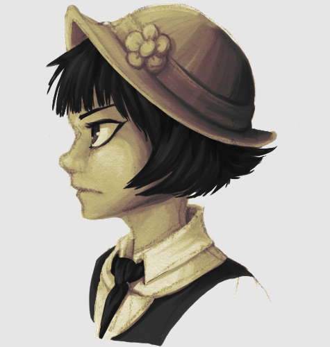
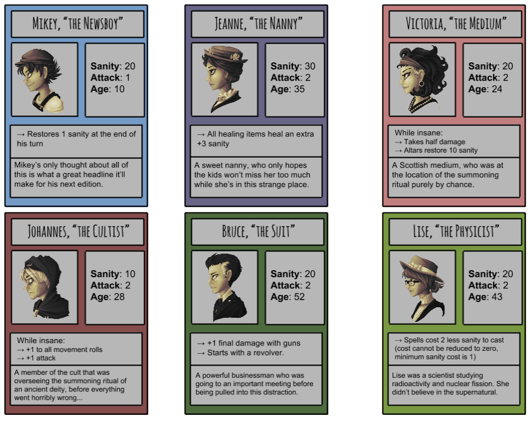
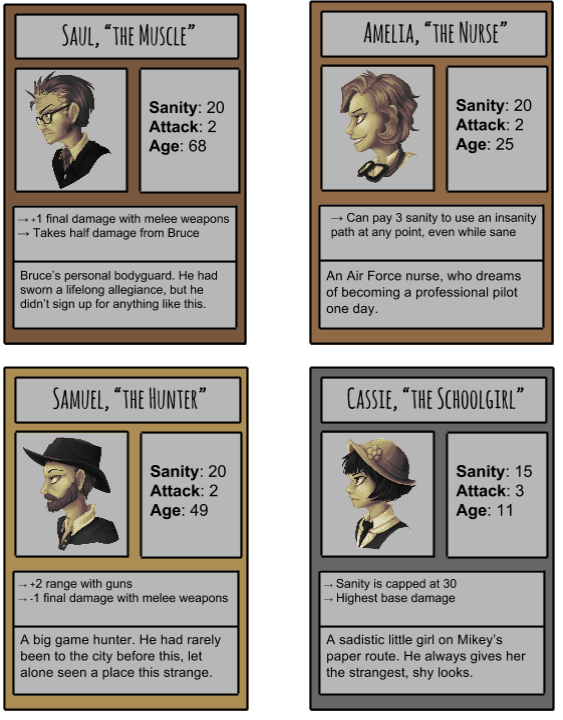
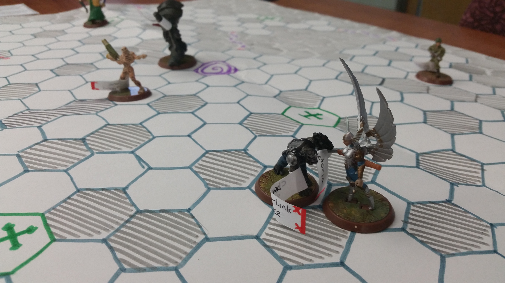
Psychosis is a board game that was developed as a semester project. The concept and core gameplay elements were my design, and I acted as the project lead.
The game is a Lovecraftian horror. You play as one of ten characters, who are trapped in an alternate realm. To escape, they need to become sane enough to survive the return trip through the portal. Before the portal will open, however, they must defeat the 'Guardian' (a boss).
Sanity is the central mechanic, acting as the health, win condition, lose condition, and currency. The exit portal requires sanity, which is directly lost through combat damage, purchasing items, and casting spells. Some options are only available to sane or insane players, and some characters are more affected by insanity than others.
The use of a single resource creates interesting dynamics. The exit portal requires sanity to enter, yet inevitably costs sanity to open due to the Guardian fight. It's helpful to work together, but PvP is not only allowed, but almost unavoidable. This creates an unofficial two phase dynamic; you're inclined to work together to defeat the Guardian, but immediately afterwards, players become worst enemies who crawl over each other to be the first one to the portal. Players spend as much time trying to keep others at a low sanity as trying to increase their own, so the winner often just finds themselves at the right place at the right time.
The game was developed by five students (including myself). As it was my concept, I guided our meetings and kept discussions on track with the game's goal, but we worked as a team to work out balancing issues and gameplay quirks. My main personal responsibility was developing the characters: names, ages, personalities, and their unique abilities. Many of the characters are inspired by real people, and their ages are accurate to the implied time period of the game (early 1920s).